Fotografías de escuelas: el arte de la observación
La escuela como ámbito de estudio de los docentes
Itinerarios en el tiempo
Una cartografía de la formación docente en Córdoba
Presentación
Los álbumes de la colección “Fotografías de escuela: el arte de la observación” ofrecen un conjunto de fotografías de distintas instituciones escolares de la provincia de Córdoba. Han sido seleccionadas de archivos o tomadas por un fotógrafo en función de un tema que da sentido y orienta el diseño de cada álbum. Las imágenes están acompañadas, además, por una selección de citas de referentes y estudiosos de la práctica fotográfica y por ensayos de autores de diversas disciplinas que las toman como punto de partida para desarrollar, a través de la escritura y cada uno a su modo, las artes de la observación.
Los álbumes se suman al conjunto de materiales para la enseñanza ofreciendo una documentación y una reflexión desde la visualidad que intentan capturar las acciones propias de la vida escolar.
Este álbum en particular ofrece registros de la Escuela Primaria Cura Brochero, que fue “observada” fotográficamente durante una jornada de encuentro docente, en la que estudiaron y reflexionaron sobre la lectura y su enseñanza.
Registros fotográficos

Apertura del encuentro de estudio
5 fotografías

Estudiar en grupos pequeños
20 fotografías

Puesta en común: compartir conocimientos
8 fotografías
Ensayos

Lecturas compartidas en la escuela Cura Brochero
Por María Elda MárquezLas actividades de lectura entre docentes en la escuela Primaria Cura Brochero...

Aportes a la actividad de observación
Por Gloria EdelsteinEstas líneas surgen a partir de un convite que invita a observar...

La Escuela después de la escuela
Por Mariana Ocampo, Valeria Daveloza y Daiana BaroneEs un momento, una ráfaga, un ya pasó. Todo representa cansancio, agotamiento...
Me es difícil venir, pero estaré aquí la próxima semana
Por Gonzalo MarullLxs docentes leen. Leen sentadxs. Con los pies en el suelo, los pies más altos que el asiento...
Fotógrafa
Luciana Dadone es directora de proyectos documentales con fines sociales y educativos. Ha ganado convocatorias de Canal Encuentro, INCAA y Polo audiovisual Córdoba.
Licenciada en Comunicación Audiovisual y Magíster en Dirección cinematográfica. Es docente en carreras de grado y maestrías en universidades de Buenos Aires y Córdoba. Dirige proyectos de investigación aplicada que articulan el audiovisual y procesos educativos.
Actualmente es Coordinadora del Área Audiovisual del ISEP (Ministerio de Educación de la provincia de Córdoba) donde ha gestionado más de 900 producciones desde 2018 para la comunidad docente y las infancias de todo el país.
Bibliografía
Las tres citas utilizadas como epígrafes en los álbumes fueron extraídas de Bárcena, F., López, M. V. y Larrosa, J. (Orgs.). (2020). Elogio del estudio. Buenos Aires: Miño y Dávila.
Agradecimientos
Queremos expresar nuestro agradecimiento María Elda Márquez, Raquel Robles y Andrea Gómez Vega quienes conforman el equipo directivo de la Escuela Cura Brochero, así como al personal docente y no docente.
Autoría
Fabián Iglesias y Mariana Schneider (compiladores)
Equipo de producción del álbum
Ensayistas: María Elda Márquez, Gloria Edelstein, Valeria Daveloza, Daiana Barone, Mariana Ocampo y Gonzalo Marull
Fotografía: Luciana Dadone
Corrección literaria: Juan Pablo Spinassi
Diseño gráfico: Renata Malpassi y Paula Fernández
Diseño web: Matías Rosini
Serie de álbumes “Fotografías de escuelas: el arte de la observación”
Una propuesta fotográfica que captura escenas en las instituciones educativas de formación docente y reflexiona pedagógicamente sobre ellas.
Esta serie constituye un subproyecto de “Itinerarios en el tiempo. Una cartografía de la formación docente en Córdoba”.
https://isep-cba.edu.ar/itinerarioseneltiempo
Dirección: Adriana Fontana
Coordinación general: Luciana Cometto y Luciana Dadone
Coordinación del subproyecto “Fotografías de escuelas: el arte de la observación”: Fabián Iglesias y Mariana Schneider
Cómo citar este material
Iglesias, F. y Schneider, M. (comp.) y equipos de producción del ISEP. (2025). La escuela como ámbito de estudio de los docentes. Itinerarios en el Tiempo. Una cartografía de la formación docente en Córdoba. Para el Instituto Superior de Estudios Pedagógicos, Ministerio de Educación de la Provincia de Córdoba.
Este material está bajo una licencia Creative Commons (CC BY-NC 4.0)

